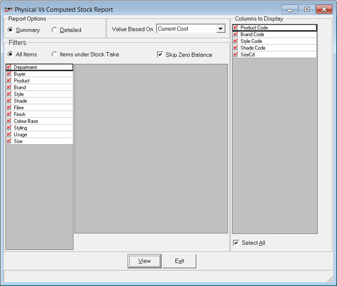

This report is taken after the completion of physical stock recording for all items.
The report shows the difference between physical and computer stocks available. Alarming differences will have to be analyzed and addressed properly, since such a situation can happen only when pilferages are at a high or the goods inwards, outwards and sales are not being properly recorded.
Generally, the personnel conducting physical stock take, prints this report and gets this signed by the shop owner before going ahead with the discrepancy updation where the physical stock values are moved to computer stock.
How to reach: Stock > Stock Take > Physical Vs Computed Stock
On invocation, the following window is displayed.

Report Options
Summary: Select to view a summarised report.
Detailed: Select to view a detailed report.
Value Based On: Select the basis for the value from the list. By default, all the columns are displayed.
Note: The Current Cost can be hidden by the administrator based on user-wise restriction.
Filters
All Items: To display all items with Stock number.
Items under Stock Take: To display items under Physical Stock Take.
Skip Zero Balance: Select to skip items with zero balance.
Columns to Display:
Product/ Brand/ Style/ Shade/ Size code: To view the detailed report with the selected columns.
Select All: Select to display all columns. By default, all columns are selected. Deselect the columns you do not want to view in the report.